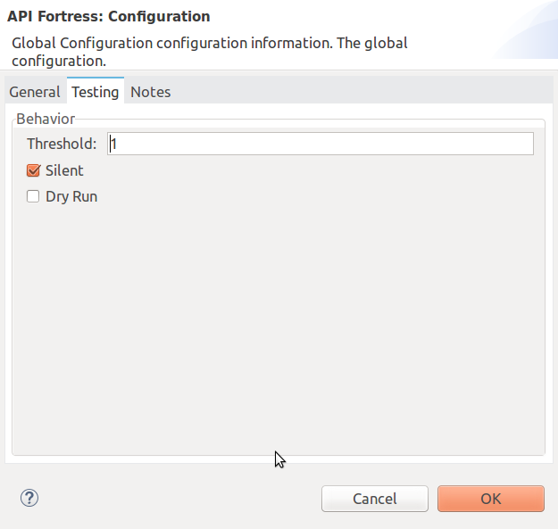

Introduction
API Fortress is the most complete API testing platform in the market. The API Fortress Anypoint Connector allows you to serialize your API responses in Mule and send them to API Fortress for testing. Based on the configuration, the results of the tests can be sent back to the Mule flow or be stored in API Fortress for further analysis.
Read through this user guide to understand how to set up and configure a flow using the connector.
MuleSoft maintains this connector under the MuleSoft Certified support policy.
Prerequisites
This document assumes that you are familiar with Mule, Anypoint Connectors, and Anypoint Studio Essentials. To increase your familiarity with Studio, consider completing a Anypoint Studio Tutorial. This page requires some basic knowledge of Mule Concepts, Elements in a Mule Flow, and Global Elements.
To use the API Fortress connector you must have the following:
-
Anypoint Studio
-
A paid or trial API Fortress account
Hardware and Software Requirements
For hardware and software requirements, please visit the Hardware and Software Requirements page.
Compatibility
| Application/Service | Version |
|---|---|
Anypoint Studio |
6.0 or higher |
Mule Runtime EE |
3.8.x or higher |
Java |
1.7 or higher |
API Fortress account |
trial or higher |
Installing the Connector
You can install the connector in Anypoint Studio using the instructions in Installing a Connector from Anypoint Exchange.
Upgrading From an Older Version
If you’re currently using an older version of the connector, a small popup appears in the bottom right corner of Anypoint Studio with an "Updates Available" message.
-
Click the popup and check for available updates.
-
Click the Connector version checkbox and click Next and follow the instructions provided by the user interface.
-
Restart Studio when prompted.
-
After restarting, when creating a flow and using the connector, if you have several versions of the connector installed you may be asked which version you would like to use. Choose the version you would like to use.
We recommend that you keep Studio up to date with the latest version.
Before Using the Connector
Before you start using the connector (other than running the demo) here’s a few thing you should know.
Register/Upgrade an API Fortress Account
The trial account will provide you access to most API Fortress features, including the API that is required to run the connector. A trial account lasts for 30 days. Register for a free trial at mastiff.apifortress.com.
Refer to apifortress.com for pricing options, or email support@apifortress.com to discuss options that best suit your needs.
Build a Test for Your API
Build a test using the API Fortress visual composer. Since the payload will be forwarded from the Mule engine, the test is not required to perform I/O operations to retrieve the resource. Therefore, the test will generally only contain assertions evaluting the content of the payload variable.

The most impressive part of the API Fortress platform is the ability to create intelligent tests without writing any code. To simplify this we suggest using the HTTP console. This facilitates the process of writing a test because the GUI composer will make suggestions during composition. To do this either make a call with the console, or paste an example payload in the "Response" tab.
We strongly suggest you review the Examples, or create a test using Magic to quickly learn how to use the GUI composer. Please refer to the API Fortress documentation for extensive guides on creating a test with from API Fortress.
Collect the Information You Will Need
You will need the following information to use the API Fortress API to run tests:
-
API Hook URL : API Fortress generated URLs representing a project. You can generate one by accessing your company page. With this URL you can access all the operations that do not expose sensitive data, including running tests.
-
Test ID : When running a single test you will need the test ID, which can be retrieved in the test interstitial page.

Configuring the Connector Global Element
To use the API Fortress connector in your Mule application, you need to configure a global API Fortress element which can be used by the API Fortress connector (read more about this at Global Elements). The API Fortress connector offers the following global configuration:
| Field | Description |
|---|---|
connectTimeout |
Timeout to connect in seconds. Increase it if your connection to the API Fortress instance has long latencies. |
socketTimeout |
Socket timeout in seconds. Increase it if your connection to the API Fortress instance is slow. |
totalConnections |
Maximum number of parallel HTTP connections. A high number will effect resource consumption. A small number will slow the connector down. |
threshold |
Run a test after a certain number of requests have been received. Used to reduce the samples. |
silent |
True if the API Fortress cloud shouldn’t send failure notifications. |
dryRun |
True if the API Fortress cloud shouldn’t store test results. |

Using the Connector
The connector can be placed anywhere in a Mule flow. The payload can either be a plain JSON/XML string, or a POJO object that will be converted to JSON.
Other than the payload, the connector will require access to the response headers you can configure in the connector instance configuration. The "content-type" header should be present, otherwise text/plain will be used.
Operations
There are four operations available on the connector. They are explained below. From a high level, either the flow can wait for the results for it to use, or continue with the flow without expecting that result.
Automatch is a system API fortress uses to decide which test to run for a partial endpoint URL, by matching a pattern. For example, the /products/shoes endpoint will match the /products/* pattern.
| Operation | Description | Parameters |
|---|---|---|
single test synchronous |
The serialized API call will be forwarded to the API Fortress engine, and one test will be run against it. The connector will wait for the result of the test and set it as payload. |
payload, hook,testId,headers,variables. |
single test passthrough |
Will perform the same operation as the synchronous mode, but will not wait for the test results. It will continue the flow as soon as it gets an acceptance confirmation from API Fortress. The original payload is preserved in the flow. |
payload, hook,testId,headers,variables,failOnError. |
automatch synchronous |
The serialized API call will be forwarded to the API Fortress engine that will choose which tests to run based on the automatch field. Eventually, the connector will wait for the result of the tests and set them as payload. |
payload, hook,headers,variables. |
automatch passthrough |
Will perform the same operation as the synchronous mode, but will not wait for the test results. It will continue the flow as soon as it gets an acceptance confirmation from API Fortress. The original payload is preserved in the flow. |
payload, hook,testId,headers,variables,failOnError. |
Parameters
| Parameter | Description | Default | Required |
|---|---|---|---|
payload |
A reference to the payload to be tested. It generally is made of text, but can be a POJO as well. |
|
yes |
hook |
The API Hook URL identifying one project, as described in "Collect the Information You Will Need." |
yes |
|
testId |
The ID of the test to run for a single test run. It can be retrieved on the test interstitial page, as described in "Collect the Information You Will Need" |
yes |
|
automatch |
For automatch operations, a path that identifies the URL of the endpoint. Please refer to the Automatch documentation. |
yes |
|
headers |
An API response payload generally contains multiple headers you might want to test. Though not required, it is strongly suggested to provide at least the content-type header. |
|
no |
variables |
Extra variables to be injected in the scope of the test. Examples could be the server name, the flow name, or the local time. The variables will be accessible to the test just like the |
empty |
no |
failOnError |
Where supported, this flag will decide whether the flow should continue or not even when an I/O exception is raised. When set to true, the failure will throw the exception, when set to false, the flow will continue. To be used when the connector is placed in critical flows that need to continue in any case |
true |
yes |
Connector Namespace and Schema
When designing your application in Studio, the act of dragging the connector from the palette onto the Anypoint Studio canvas should automatically populate the XML code with the connector namespace and schema location.
Namespace: http://www.mulesoft.org/schema/mule/connector
Schema Location: http://www.mulesoft.org/schema/mule/connector/current/mule-connector.xsd
|
Tip
|
If you are manually coding the Mule application in Studio’s XML editor, or another text editor, define the namespace and schema location in the header of your Configuration XML, inside the <mule> tag.
|
<mule xmlns="http://www.mulesoft.org/schema/mule/core"
xmlns:xsi="http://www.w3.org/2001/XMLSchema-instance"
xmlns:api-fortress="http://www.mulesoft.org/schema/mule/api-fortress"
xsi:schemaLocation="
http://www.mulesoft.org/schema/mule/core
http://www.mulesoft.org/schema/mule/core/current/mule.xsd
http://www.mulesoft.org/schema/mule/api-fortress
http://www.mulesoft.org/schema/mule/connector/current/api-fortress.xsd">
<!-- put your global configuration elements and flows here -->
</mule>Using the Connector in a Mavenized Mule App
If you are coding a Mavenized Mule application, this XML snippet must be included in your pom.xml file.
<dependency>
<groupId>org.mule.modules</groupId>
<artifactId>api-fortress-connector</artifactId>
<version>1.0.0-RELEASE</version>
</dependency>|
Tip
|
Inside the
|
Demo Mule Applications Using Connector
Simple Passthrough Use Case
Before you implement this example make sure to read the "Before Using the Connector" section.
Here’s the flow we are going to implement in the Anypoint Studio UI.

The simplest use case is the validation of a response coming from an endpoint.
-
Set up a basic HTTP entry point by dragging the HTTP connector from the palette to your canvas. Create a global configuration with the default values (port 8081).
-
Drag and drop an HTTP request connector on the canvas as second step of the flow. Configure the instance to perform an HTTP call to an API endpoint of your choice. Refer to the HTTP request connector documentation
-
Drag API Fortress connector from the palette and drop it as the third element. Create the default global configuration setting silent=true.

-
Select the "single test passthrough" operation.
-
Leave the headers input as default
-
In your API Fortress account, on thr settings page, create an API Hook URL for your project. Use it as the "hook" parameter.
-
In your API Fortress account, on the test details page, obtain a test ID. Use it as the "testId" parameter.

-
Run the flow in your Mule engine
-
Hit the url
http://localhost:8081with an HTTP client of your choice. The flow should return the payload provided by the second HTTP connector. -
Verify the test has run and produced a report in the API Fortress project dashboard.
Simple Passthrough Use Case - XML
Paste this into Anypoint Studio to interact with the example use case application discussed in this guide.
<?xml version="1.0" encoding="UTF-8"?>
<mule xmlns:http="http://www.mulesoft.org/schema/mule/http" xmlns:api-fortress="http://www.mulesoft.org/schema/mule/api-fortress" xmlns="http://www.mulesoft.org/schema/mule/core" xmlns:doc="http://www.mulesoft.org/schema/mule/documentation"
xmlns:spring="http://www.springframework.org/schema/beans"
xmlns:xsi="http://www.w3.org/2001/XMLSchema-instance"
xsi:schemaLocation="http://www.springframework.org/schema/beans http://www.springframework.org/schema/beans/spring-beans-current.xsd
http://www.mulesoft.org/schema/mule/core http://www.mulesoft.org/schema/mule/core/current/mule.xsd
http://www.mulesoft.org/schema/mule/http http://www.mulesoft.org/schema/mule/http/current/mule-http.xsd
http://www.mulesoft.org/schema/mule/api-fortress http://www.mulesoft.org/schema/mule/api-fortress/current/mule-api-fortress.xsd">
<http:listener-config name="HTTP_Listener_Configuration" host="0.0.0.0" port="8081" doc:name="HTTP Listener Configuration"/>
<http:request-config name="HTTP_Request_Configuration" protocol="HTTPS" host="mastiff.apifortress.com" port="443" basePath="/api/examples/retail" doc:name="HTTP Request Configuration"/>
<api-fortress:config name="API_Fortress__Configuration" silent="true" dryRun="false" doc:name="API Fortress: Configuration"/>
<flow name="single_test_endpoint_response" doc:description="In this example we run a single test against the response of a payload. API Fortress is using the passthrough operation so that the endpoint payload is preserved and sent back to the requesting agent.">
<http:listener config-ref="HTTP_Listener_Configuration" path="/single/endpoint_response" allowedMethods="GET" doc:name="HTTP"/>
<http:request config-ref="HTTP_Request_Configuration" path="/products" method="GET" doc:name="HTTP"/>
<api-fortress:single-test-passthrough config-ref="API_Fortress__Configuration" hook="https://mastiff.apifortress.com/app/api/rest/v3/9e05babb-e332-4715-bba5-a1a487a4b05c324" doc:name="API Fortress" testId="57ce873ebbb0fb02e8069d42" />
<set-payload value="#[payload]" mimeType="application/json" doc:name="Set Payload"/>
</flow>
</mule>
Resources
-
Learn more about working with Anypoint Connectors.
-
For additional documentation on the API Fortress platform, visit our documentation.
-
Access the API Fortress Connector Release Notes.